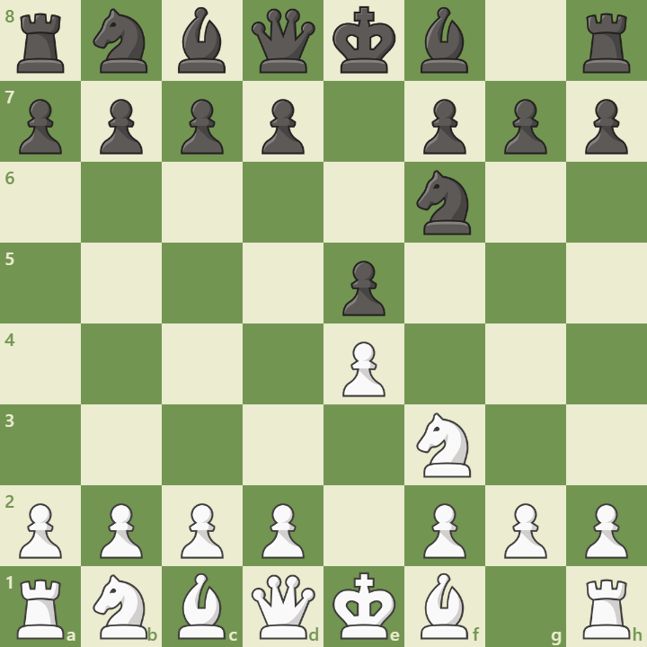

Overview
The Petroff Defense (also called Russian Defense) is a symmetrical and solid response to 1.e4. It begins with:
1. e4 e5 2. Nf3 Nf6
Black immediately challenges the center and avoids common tactical traps. It’s known for its reliability and has been used in many elite tournaments.
Opening Diagram
This position arises after 2...Nf6, mirroring White’s knight and preparing ...Nxe4.
Main Variations
- Classical Line: 3.Nxe5 d6 4.Nf3 Nxe4 – balanced play
- Steinitz Attack: 3.d4 – aggressive central expansion
- Three Knights Game: 3.Nc3 – transposes to other systems
Strategic Themes
- Symmetrical structure and central control
- Early exchanges and simplified positions
- Ideal for players seeking solid, drawish setups